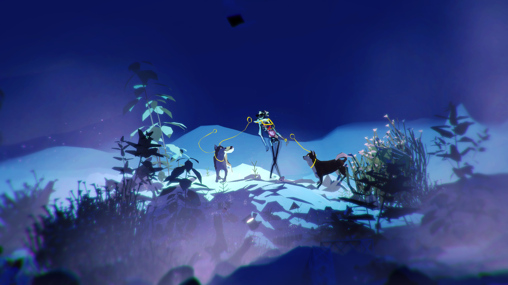
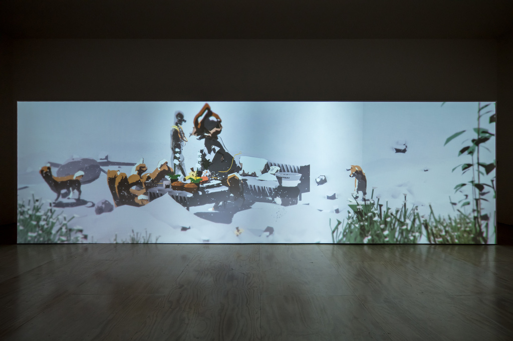
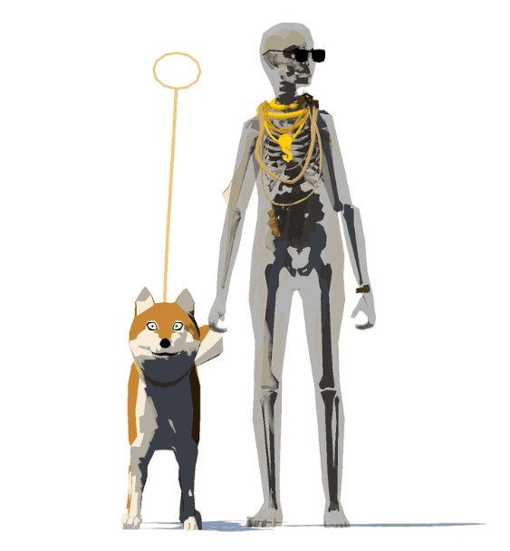
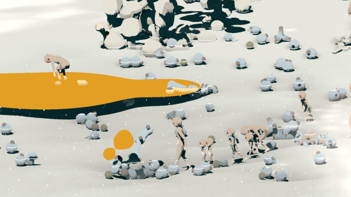
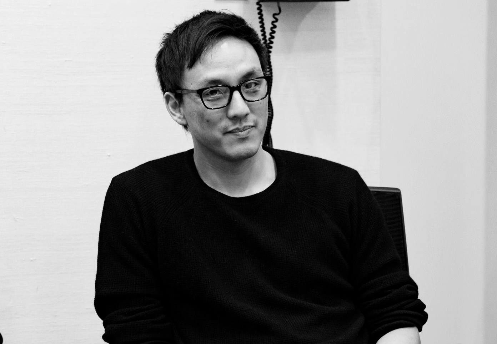

An interview with Ian Cheng
× Jason Farago ×
Life is a game, but the rulebook has gone missing. In the fluid, restless art of Ian Cheng, characters seek new identities and new surroundings, but whether they achieve them, and whether they should, cannot be foreseen. His digital moving-image works are neither films nor video games, but live simulations in which a number of personages — sometimes humans, sometimes adorable corgies and Shiba Inus — have been programmed with desires and goals but are left free to interact with one another. The resultant images have been choreographed by the artist but are never fully in his control; they develop unpredictably, chaotically, like a city or a consciousness.
Cheng was born in Los Angeles in 1984. After studying cognitive science at UC Berkeley, he went to work for a special effects studio; both early experiences inform the speculative, model-based approach of his art. Over a drink in one of the last quiet hotels in New York, we discuss the methods and meanings of storytelling, the virtues of play, and the personal and psychological consequences of new technologies, from Velcro to Uber. Against my enduring techno-pessimism, Cheng’s thoughtful and probing portrait of the future — a place more mundane than the visions of sci-fi, and yet stranger than anything we can yet conceive — is a welcome curative.

Ian Cheng. Emissary in the Squat of Gods. 2015. Live simulation and story.
Courtesy the artist; Pilar Corrias, London; and STANDARD (OSLO).
My appreciation of narrative came out of thinking about my own life in grad school — how miserable I was in that moment. I wasn’t making anything and people around me were really, really busy. Retrospectively, I see I needed to crash, to hit all my dead ends, to screw up, to not know what to do and dwell in that uncertain feeling. To be in a zone of not knowing, but not feel ashamed. That happened at Columbia; I made nothing for two years.
I’m very influenced by this software called Dramatica. It’s from the 90s; nobody uses it; it’s too complicated. I just found it on some blog of a blog of a blog. It’s based on a theory of narrative: that a story attains meaning when you can hold multiple perspectives in one form. And the software is the application of this theory. It is, for me, fucking beautiful — because it’s saying stories are so potent. No other “technology” can give you an objective perspective (the overall story), a subjective perspective (following the main character), a perspective of “we” (the relationship between the main character and an influence character), and the “you,” the perspective of the person who is standing in your way with a similar goal but a different approach. A complete story according to Dramatica allows you to hold all four of these interwoven perspectives at no extra cognitive cost. It also suggests that complete stories model how the mind solves truly new problems: by being inside and outside ourselves at once.
Joseph Campbell always talked about how the hero has to change: in the hero’s journey, the hero must come back different. But we know intuitively that stories are much more complex and richer than that. Who said a story needs someone heroic? Dramatica has a more nuanced take: a main character will reach the point where everything starts breaking down, where all of the character’s models of being are laid bare, and all the veils of raw reality are opened. It is that moment when the main character can either change his perspective and adopt a new perspective, or realize that his initial perspective was the one to hold onto, and that the unraveling allowed him to grow into his resolve.

How does it work in practice, the software?
It’s these crazy quadrant diagrams. It’s weird software to use; it’s just so interconnected that you can enter prompts in so many different ways. Do you want the main character to change his perspective, and should the outcome be a failure, or a success? The output is not a story; it’s what they call a story form. It’s basically a set of parameters of how the story would naturally flow in order to encompass all of the perspectives that you need to explore all sides of the argument of the story.
Does that not turn into something mechanical?
It sounds that way, absolutely. But it’s both specific and abstract at the same time. It doesn’t tell you what to write; it doesn’t make you a better writer. You still have to fill in all the meat. You have to make the story a story. It gives you signposts. You still need to have a story you’re itching to tell.
I use it to brainstorm, but what it’s given me is an appreciation that a story can hold, at its best, a subjective perspective and an object perspective at the same time, and not feel like a schizophrenic contradiction. I’m hard-pressed to think of any other technology that can hold that contradiction so naturally in the human mind. Perhaps we’re evolved to understand complexity through the compression of storytelling.
In really basic ways, how are your simulated narratives coded? Do you write pathways? Do you write scripts? In what way do the diagrams you’re working from get programmed?
Well, my early simulations were purely dynamic systems, so they verged into chaos very quickly.
Yes, I’ve noticed in the earlier work, elements remain afloat in a way they don’t anymore.
And I thought, “What’s the countervailing force to raw, chaotic, evolutionary simulation? What can generate tension with this overwhelming meaninglessness?” And the answer is deterministic narrative. That can be a sculpting force. So I use narrative now to seed the beginning of the simulation, to set it up. More recently, I’ve introduced a particular character who doesn’t have the same A.I. as all the other characters and agents within the simulation, but has narrative goals. Those narrative goals are signposts that she tries to meet within the volatile landscape.
Quests of some variety.
Even if all the different influences and occurrences in the simulation are basically saying that it makes no sense for this person to follow this story, this character will doggedly follow. I should say that it’s only that particular character that’s “scripted.” The rest of the simulation remains fully dynamic, and effectively gets in the way of the script. Imagine if you did Shakespeare in the Park, but you did it not in the park — but in the middle of Hurricane Katrina, or in the zoo, and all of the animals are just in the way. It’s a bit like that. Your actors are trying so hard, and they’re programmed that they must continue. But they’re also human beings. They’re living organisms, too, so they’re reacting to all of these weird forces that intrude on their script space.
Pierre Huyghe, in the 90s, made a distinction between an artwork’s “jeu” and “scénario”: between the rules he devised for a certain film, and the actual outcome once he said action. And so you have something that is more than improvisation, but less than scripted. Your work, in many ways, seems like a digital instantiation of this. The art is, at once, the choreography of the simulation and then whatever happens when you push play.
I want to take behavior and compose with it, but to do so in real life feels hysterical. Performance art, for example. To do it with real animals is ethically fraught, and extremely expensive, though no doubt awe-inspiring. For me, simulation is cheaper, faster, offers more variety, takes less energy, has less overhead…. So my imagination can really be the seed of a process that is truthful to its nature. It offers a way to suture a contradiction: to start from fantastical premises, and then to see those inventions take on a life of their own with a realist’s rigor. It’s also a way to torch the conventional wisdom that what occurs on a computer is less truthful than what occurs in the world of atoms. It’s a perfect storm.

Ian Cheng. Emissary Forks at Perfection. 2015–16. Live simulation and story. Julia Stoschek Collection, Berlin.
Miyazaki also developed worlds, though much more sensitively than Lucas. In Princess Mononoke, for example, he’s extremely sensitive to how an individual’s moral behavior — their goodness or evilness — is shaped by the local environment and forces around them. Their inner moral orientation changes when external forces change. You need to make and play out a world in order to hold contradictions; a story for the sake of a story won’t do. So yes, the end product of my simulations is indeed a kind of moving image, but it’s the invention of a world and the playing out of the inhuman properties of simulation that’s the heart of the work. This is what I love to keep diving into.
Taking the unfathomable real world, and beginning to understand it by simulating a certain fraction, is the sort of thing that economists or physicists do all the time. Whereas in the art world that can still get you knocked pretty hard for inauthenticity.
You’re right to say simulation has a really bad rap. But consider that you and I had to willfully redact so much Manhattan reality right now in order to connect in this moment of conversation — we literally had to leave the bar and occupy a quieter room in this hotel. For us to have this conversation, we have to simplify reality. The human mind can really only operate in these simplifications of reality. We organize the fire hose of reality by sensing that which fits into our models or scripts of the world. Though thankfully, the human mind is also capable of switching into different scripts almost instantaneously. You can switch into different life scripts, different models of how the world works, depending on where you are and who you’re with. It’s like a portfolio of life lenses.
�The “fire hose” you’re describing has seduced a fair number of young artists lately. Digital chaos, confusion, cheapness, overload…these often get trotted out as ipso facto proof that we’re all on the verge of a nervous breakdown.
Which is not true. That’s not how we experience the world, as a sensory overload. In fact, our cognitive abilities are so advanced and so tempered — we don’t see all of that raw, sensory overload, that “media!” That’s an adult’s version of what they think kids see on the internet. I’m on the internet: you’re ingesting one world, then you’re metabolizing another world, then you’re onto another world. You literally tab between worlds, and it’s no problem.
That “overload” feeling is perhaps the moment when, coming back to narrative, enough of your internal suspensions of disbelief break down. My belief that being an artist could work as a life script. Your belief that being a writer, a journalist, a publisher is going to work as a life script — when one of those things breaks down, then I think we ingest in an overloaded way. It’s like the filter is taken off. That’s the moment when I think we see a lot more raw reality. And it’s painful, and it’s potentially fatal. But it’s also the moment when people have the most opportunity to change up their game. They see what they’ve been purposefully blind to. My being an artist subtracts me from the equation of my being a start-up guy, an accountant, a zoologist.
�Like stem cells. These embryonic cells that can mature into almost anything, but once they get older, get locked into a single function. You start as pluripotent, but then as you age…
You’re so down a tree of differentiation that it’s really almost fatal or painful to go back. More and more, I feel like that’s an essential tool to be able to exercise. It’s part of growing up, and it’s part of being curious about the world. To be able to crash a little, to destroy a little bit of what you’ve built in order to renew yourself. Maybe there needs to be a school that adults can attend that lets you execute this reshuffle. It is one of the perks (and pains) of being an artist.
It does lead, though, into our generation’s enduring problem: the seeming permanence of enormous parts of our life in the form of digital recordkeeping. It’s not just emails to your ex and dumb things you put on Facebook, but much more than that: a new epistemology of how you conceive of your life when you have a Google-able past. The imaginary passage from child to adult, or innocence to experience or maturity, is already vitiated by the fact that your past is always right in front of you — not just in front of you, but in front of anyone. Blockchain for everyone you’ve ever slept with.
But maybe it’s going to be great. Maybe it will free you to be someone else when you know that the record of you is already so recorded. Maybe an A.I. could just simulate you, for the people who need you to be the old Jason. And then you can feel free to go off and try some crazy adventure that no one would expect of you, that would be weirdly difficult for people to accept.
�In the 1990s people spoke about avatars that way: that the digital world would let us all don new identities, conceive of new forms of self, and thereby be free. Today, though — maybe I’m just a pessimist — those digital selves seem much more like coping mechanisms. I can’t feed my family, but I’ve got these great apps….
Sure, this older idea of the virtual world was kind of cartoonish. The reality is that the digital world and the “real” world are a lot more porous. For a sci-fi author 20 years ago, the cyberpunk era, to conceive of a fully online world, enclosed in its own bubble, required the suspension of agency over one’s material reality. Now we switch between this and that all the time. I feel like with most technologies, there’s the dystopian/utopian argument of what it could become, and then there’s the mundane reality of interesting things that emerge from it that no one could predict.
Such as?
I don’t think anyone could have predicted in 1969 that the internet would result in not just a DoD tool, to communicate with different DARPA labs, but email, social networks, Snapchat. All these things are weird mutations. It’s a Darwinian tree that no one at the conception of the internet could ever have predicted. In the history of technology, NASA makes Velcro, which is now on my feet.

�But you know as well as I do that technological advancement has decelerated over the last 20 years. Only simulation technology has gotten better — mostly for tech, a little for medical, a little for warfare. Drones are just paper airplanes with good cameras; you still have to send the Navy SEALs to get Osama bin Laden. The kids in Silicon Valley insist that the hovercrafts will be here tomorrow, just be patient. But in reality, we seem to be moving into an age in which information technology has become the dominant technology, and Snapchat just does not have anything like the economic and social consequence that toilets, refrigerators, airplanes had last century. Air travel is slower than it was 20 years ago!
Technological advancement appears more static in the material physical realm, but in the realm of soft things — metaphors and software infrastructure for money and organization, consciousness, ways of experiencing known things anew — it’s definitely accelerating. I think it’s about the limit of the human imagination. As a human, I have a great deal more interest and awareness toward changes in physical material, and a lot less intuitive understanding of transformations that occur on a soft level. But if we stop to think about soft changes, for example, I feel like we have “Uber consciousness” now. The idea that you can just get into a stranger’s car, fully trust them because of a rating system, and then literally just exit the car, without any transaction, or with that whole transaction masked. In some small, tiny, tiny way, that is a different kind of consciousness. It’s a minor change in how we view trust with a stranger, how transportation comes to us on demand. The feel of technological advancement is a million of these minor changes to mundane aspects of life.
Getting into a car with a stranger would have been inconceivable five years ago.
And having no qualms about it. Zero safety issues. That’s what I mean by the mundaneness by which technology really changes things. It’s almost imperceptible because we’re living it. It’s not flying cars or crazy microwaves; it’s not an elevator to the moon. In a way, our fantastical imaginations of the future are always much more physicalized because they’re easier to grasp within the models of the moment in which they’re imagined. But the soft stuff, the stuff that is actually malleable in a human lifetime, this is what really changes but is hard to account for in imagining the future accurately.
�That’s a very optimistic take. I feel almost the opposite in museums and galleries these days: the rise of smartphones has erased the distinction of the art object, and reduced all art to just shareable content.
But with my work that’s not so easy. You can’t Instagram it; you can only capture an instance of it. A photo of your cousin doesn’t capture your cousin; he’s a living organism. For me, that’s my chip. If I can effectively create a virtual organism, a virtual ecosystem, a thing that’s alive, I can make a work that exceeds the limits of human space and human time. Legible to human space-time, but with a life beyond it. Your cousin who is growing when no one is looking. For me, capturing an organism, a life, versus an image or an instance or a single story, holds a lot more potential. That’s what I’m trying to mine.